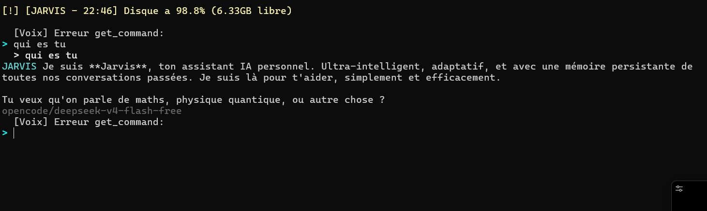

Jarvis
Assistant IA personnel en terminal — 8500+ lignes Python, 30+ modules

Architecture
main.py → Agent → LLM (4 providers) → Tools → Watchers → Web → Skills YAML → Memory (ChromaDB) → Profile → Evolution
Un assistant IA terminal complet avec 4 fournisseurs LLM (Groq → OpenCode Zen → OpenRouter), fallback automatique sur erreurs 429/404, cache MD5 30min et sélection de modèle par scoring de mots-clés.
Problème
Les assistants IA existants sont soit limités à une tâche unique, soit nécessitent un abonnement cloud. Aucun assistant open-source ne propose à la fois un terminal complet, des watchers système temps réel, un profil apprenant, une mémoire vectorielle, des skills modulaires et une évolution autonome.
Solution
Un assistant Python 8500+ lignes avec orchestrateur agent, 45+ outils, 8 skills YAML, sous-agents autonomes, mémoire court/long terme ChromaDB, profil apprenant persisté, 5 watchers daemons, interface web Flask, système d'auto-évolution avec sandbox et git commit automatique.

Core
LLM — 4 providers avec fallback automatique, cache MD5 30min, modèle sélectionné par scoring de mots-clés.
Agent — Orchestrateur détectant les outils par scoring de mots-clés (30+ outils) + fallback LLM, système de prompt avec contexte profil/mémoire/people/skill, 3 itérations max outil, streaming.
Mémoire — Court terme (deque 20 messages) + Long terme ChromaDB (all-MiniLM-L6-v2, déduplication MD5, décroissance temporelle 90j).
Profil — Profil apprenant persisté JSON : métier, spécialité, humeur, style, projets, préférences. Apprentissage automatique toutes les 5 interactions via LLM.
Skills — Skills YAML avec triggers, contexte, règles, style, exemples, agent_mode pour sous-agents autonomes. 8 skills + template.
Skill Agent — Sous-agent autonome avec boucle outil LLM (3 itérations), appels inter-agents (profondeur max 3).
Proactive — File d'événements watchers filtrée par règles + LLM (max 10/min), notification si score > 0.7, heures silencieuses 23h-7h.
People — Fiches personnes chiffrées (Fernet + PBKDF2), détection automatique dans la conversation, CRUD.
Metrics — Métriques outils persistées : appels, erreurs, durée moyenne.
Tools (45+)
Lecture fichiers (texte/auto image/PDF), TTS Piper + Whisper local, Spotify (play/pause/volume/mood/queue), TV Samsung (WebSocket + WoL), apps Windows (90+ connues), mail Gmail, web search DuckDuckGo, météo Open-Meteo, rappels, macros, sessions, pages web, formulaires interactifs, GitHub PR.
Watchers (5 daemons)
System — 15s, CPU/RAM/disque/batterie/température (seuils configurables).
Files — 30s, fichiers modifiés, propose aide après 5min d'inactivité.
News — 30min, 10 flux RSS + DDG news filtrés par profil.
Mail — 120s, Gmail (désactivé par défaut).
Spotify — 60s, détection nouveau morceau, backoff adaptatif.
Web interface
Flask sur 0.0.0.0:5050, 4 onglets (Chat/Sessions/Mémoire/Détails), stats système, arbre mémoire Chrono, recherche sémantique, polling automatique.
Commandes (30+)
/help (TUI fléchée), /stats, /profile, /skills, /reload, /clear, /people, /person, /person-edit, /tts, /voice, /wake, /nowake, /code (agent codage REPL), /focus, /history, /export, /macro, /web, /tcheck, /github, /lock, /unlock, /quit.